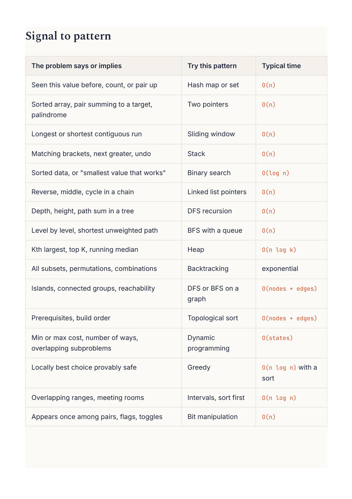
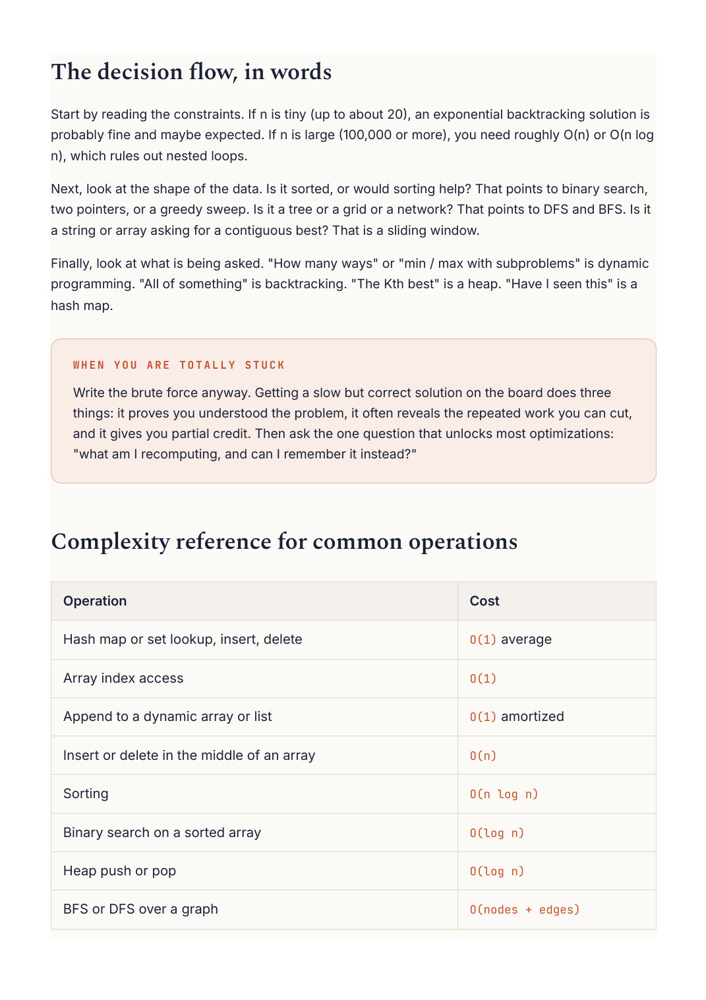

Competitive Programming
Chapter 17
Pattern cheat sheet
This is the page to reread before a contest or an interview. It compresses the whole book into signals, tools, and typical costs. When a problem lands in front of you, run down this list and something will click.


Start by reading the constraints. If n is tiny (up to about 20), an exponential backtracking solution is probably fine and maybe expected. If n is large (100,000 or more), you need roughly O(n) or O(n log Next, look at the shape of the data. Is it sorted, or would sorting help? That points to binary search, two pointers, or a greedy sweep. Is it a tree or a grid or a network? That points to DFS and BFS. Is it a string or array asking for a contiguous best? That is a sliding window. Finally, look at what is being asked. "How many ways" or "min / max with subproblems" is dynamic programming. "All of something" is backtracking. "The Kth best" is a heap. "Have I seen this" is a Write the brute force anyway. Getting a slow but correct solution on the board does three things: it proves you understood the problem, it often reveals the repeated work you can cut, and it gives you partial credit. Then ask the one question that unlocks most optimizations: